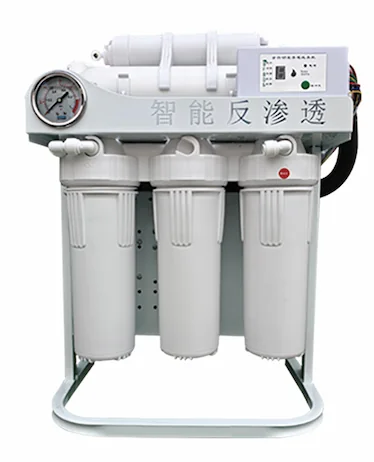
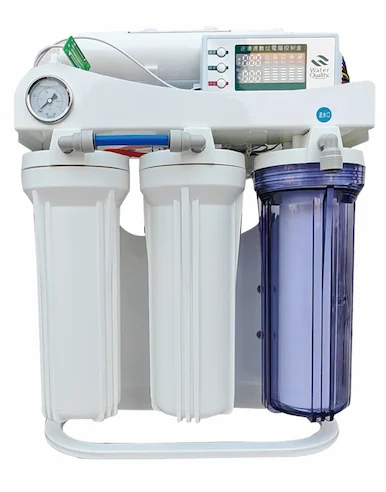
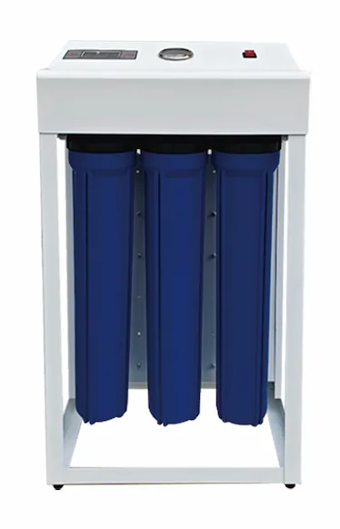
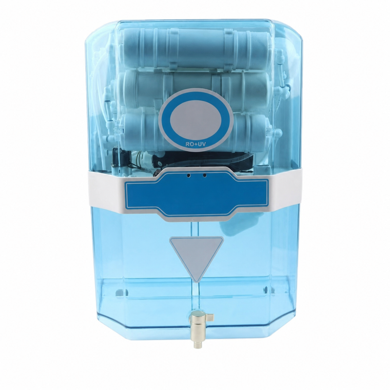
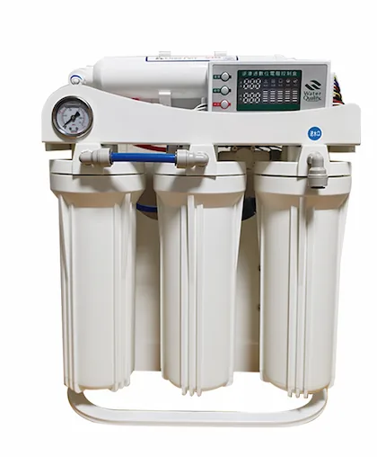
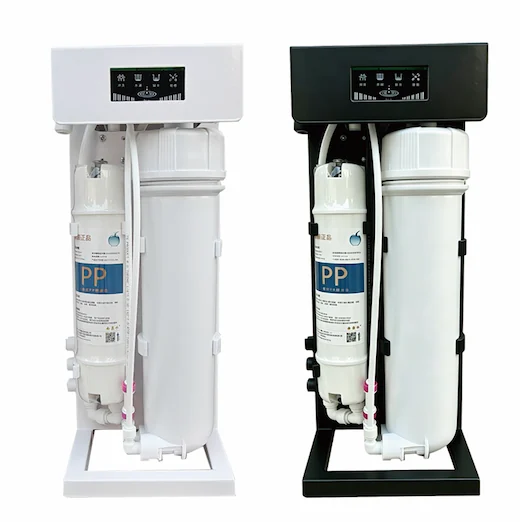
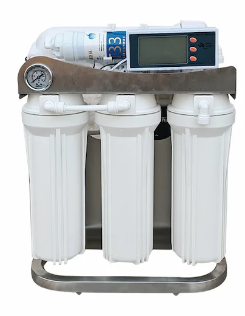
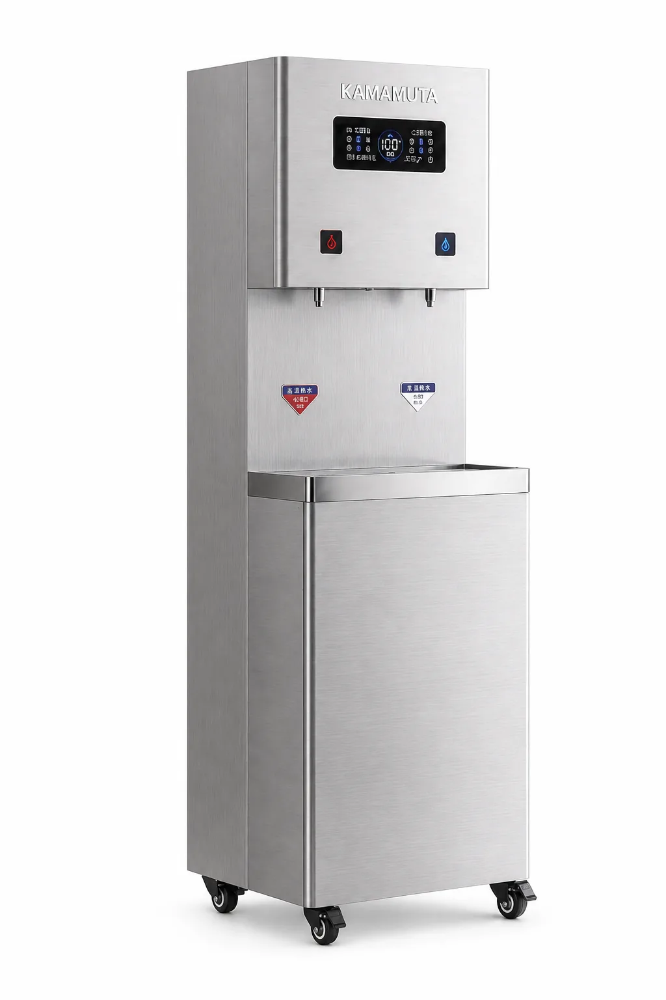

10-Inch Frame RO Water Machine 400G-1200G
- Item
- Specification
- Product Type
- 10-Inch Frame RO Water Machine 400G-1200G
- Operating Mode
- Full automatic intelligent operation with microcomputer control
OEM/ODM RO water purifiers including built-in tank, under-sink, custom 5/6/7 stage systems and industrial RO machines. Optional pressure gauges, brackets, backboards, pretreatment tanks, membrane, filters, valves and packaging.
Compare the listed models and open a detail page. Model records are counted separately from configurable dimensions; suitability must be confirmed for your project.














RO water purifiers combine sediment, carbon, reverse osmosis membrane and polishing stages to deliver drinking water systems for residential and light commercial use. Yuchen Water manufactures compact RO systems, custom 5/6/7 stage layouts and matching replacement filters for private-label sourcing teams.
The category fits under-sink kitchen systems, apartments, office pantries, appliance brand portfolios, distributor replacement programs and larger industrial RO machine projects. Buyers can choose built-in tank designs, classic under-sink layouts, 5/6/7 stage systems, single or dual pressure gauges, plastic brackets, colored brackets, simple backboards or project-based RO systems with pretreatment tanks.
| System Types | Built-in tank, under-sink RO, custom bracket/backboard systems and industrial RO machines |
|---|---|
| Stages | 5-stage, 6-stage and 7-stage options, plus project-based pretreatment and RO membrane rack layouts |
| Membrane | 50 to 400 GPD options for appliance systems; industrial membrane selection by project capacity |
| Applications | Home, apartment, office, appliance brand lines, commercial water treatment and industrial RO projects |
| OEM Options | Panel, faucet, filter set, pressure gauge, bracket color, pretreatment tank count, valve brand, label and carton |
OEM support includes cabinet shape, front panel, stage quantity, filter sequence, single or dual pressure gauges, bracket/backboard style, faucet, pump, membrane GPD rating, user manual, label and carton artwork. Engineering discussion is available for new mold or local compliance projects.
Choose reverse osmosis water purifier models by installation style, membrane capacity, tank design, pump requirement, TDS display, filter life reminder and replacement filter plan. Long-tail searches such as under sink RO system, pump-free RO water purifier and smart RO water purifier 400G-1200G should lead buyers to the matching product page.
Smart RO Water Purifier 400G-1200G — Application: Under-sink or countertop installation.
Send Inquiry
Built-In Pressure Tank RO Water Purifier 100G/200G — Storage tank: Built-in pressure tank.
Send InquiryA cabinet RO water purifier configurable with five or six filtration stages, optional UV, and OEM/ODM project support.
View product
Desktop RO Water Machine with Compressor Cooling 100G — Treatment Process: Four-stage filtration: PP + CTO + T33 + RO, with 100G RO capacity.
Send Inquiry
Custom 5/6/7 Stage RO Water Purifier OEM/ODM Manufacturer — Size: Customized by bracket, backboard and filter stage configuration.
Send Inquiry
Pump-Free Five-Stage RO Water Purifier — A non-electric five-stage reverse osmosis unit for markets with stable municipal inlet pressure.
Send Inquiry
Commercial Stainless Steel RO Water Dispenser E900-K27 — Size: 800 x 480 x 1520 mm; Hot tank: 27L.
Send Inquiry
RO Seawater Desalination Equipment & Industrial RO Machine Manufacturer — Material: Stainless steel frame, FRP or stainless tanks, PVC piping, RO membrane housings and industrial control parts.
Send Inquiry
Under-Sink Reverse Osmosis Water Filter — Membrane: RO 75GPD.
Send Inquiry
RO Membrane Element — Function: TDS, salts and heavy metal reduction.
Send Inquiry
The Female-Threaded T33 Coconut-Shell Activated Carbon Filter Cartridge uses a female-threaded inline cartridge. It uses Coconut-shell activated carbon.
Send Inquiry10-Inch Frame RO Water Machine 400G-1200G — Pure Water Flow: 400G-1200G.
Send InquiryProduct Type: 10-Inch Frame RO Water Machine 400G-800G.
Send Inquiry
20-inch Commercial RO Water Purifier 800G/1200G/1600G/2000G — Filtration Stages: Five-stage filtration with PP sediment, pre-carbon, RO membrane, post carbon or custom cartridge sequence.
Send Inquiry20-Inch Frame RO Water Machine 400G-1200G — Pure Water Flow: 400G-1200G.
Send Inquiry
Industrial High-Flow CTO Carbon Block Filter — Industry: Industrial.
Send Inquiry
Commercial Big Blue RO Water Purifier 400G-800G — Treatment Process: 10-inch Big Blue PP prefilter + RO + T33.
Send Inquiry
Commercial Central RO Water Purification Equipment 250-500 L/h — Treatment Process: 20-inch PP + 20-inch CTO + 20-inch PP + RO.
Send Inquiry
Commercial High-Flow Deluxe Big Blue RO Water Purifier 800G-1600G — Treatment Process: 10-inch large-diameter PP + 10-inch large-diameter cotton-carbon composite filter + RO×2.
Send Inquiry
Commercial Mid-Cabinet RO Water Purifier with Built-In Pressure Tank 400G-1600G — Pure Water Flow: 400G-1600G.
Send Inquiry
E600-S Commercial RO Water Dispenser — Available With or Without a Payment System — Cabinet Material: Galvanized steel and tempered glass.
Send Inquiry
Commercial Small-Cabinet RO Water Purifier 400G-1600G — Pure Water Flow: 400G-1600G.
Send Inquiry
Dual-Tank Pretreatment Integrated Skid RO Equipment 1000-3000 L/h — Pure Water Flow: 1000-3000 L/h.
Send Inquiry
Dual-Tank Pretreatment Reverse Osmosis Equipment 250-1000 L/h — Application: Hotels, workshops, schools, clinics, commercial kitchens, groundwater pretreatment and compact water purification projects.
Send Inquiry
E600-S-Min Commercial RO Water Dispenser — Purified water flow: 0.26 L/min or 1.05 L/min by RO configuration.
Send Inquiry
Multi-Stage Filter Cartridge Combination — Combination: Custom.
Send InquiryProduct Type: Front Panel 10-Inch Frame RO Water Machine 400G-800G.
Send Inquiry
Horizontal Reverse Osmosis Water Purification Equipment 250 L/h — Pure Water Flow: 250 L/h.
Send Inquiry
Large Industrial Reverse Osmosis Water Treatment Equipment 3-100 TPH — Pure Water Flow: 3-100 t/h.
Send InquiryPortable Custom RO Water Purifier 400G-800G — Treatment Process: Integrated quick-connect PP sediment filter + RO membrane 3013.
Send Inquiry
Industrial PP Melt Blown Sediment Filter (SOE/DOE) — Industry: Industrial.
Send Inquiry
Precision Filter RO Water Purification Equipment 250-1000 L/h — Treatment Process: Precision filter + RO.
Send Inquiry
Simple Type Reverse Osmosis Water Purification Equipment 250-1000 L/h — Treatment Process: 20-inch PP + 20-inch CTO + 20-inch PP + RO.
Send Inquiry
Single-Tank 20-Inch Big Blue PP Reverse Osmosis Water Purification Equipment 250-500 L/h — Treatment Process: 20-inch Big Blue PP prefilter + RO.
Send Inquiry
Single-Tank Integrated RO Water Purification and Supply Equipment 250-500 L/h — Treatment Process: Raw water pump + automatic sand-carbon tank + 20-inch PP + RO + stainless steel pure water tank + variable-frequency water supply.
Send Inquiry
Single-Tank Pretreatment Reverse Osmosis Water Purification Equipment 250-500 L/h — Treatment Process: Automatic sand-carbon tank + 20-inch PP + 20-inch PP + RO.
Send Inquiry
Six-Housing Reverse Osmosis Equipment with Pure Water Tank 250-1000 L/h — Treatment Process: 20″ PP + 20″ CTO + 20″ PP + RO.
Send Inquiry
Slim Reverse Osmosis Water Purification Equipment 250-500 L/h — Treatment Process: PP cotton filter cartridge + activated carbon cartridge + RO.
Send Inquiry
Small and Medium Seawater Desalination RO Equipment — Nitrate removal rate: ≥90%.
Send InquiryProduct Type: Thickened Stainless Steel 10-Inch Frame RO Water Machine 400G-800G.
Send Inquiry
Three-Tank Pretreatment Integrated Skid RO Equipment 1000-3000 L/h — Pure Water Flow: 1000-3000 L/h.
Send Inquiry
Mobile SUS304 Skid-Mounted RO Plant 250-500 LPH — Reference feed TDS: 1000 ppm.
Send InquiryYes. Packaging and labeling details are confirmed by model and order scope.
Share model, quantity and destination for quotation.